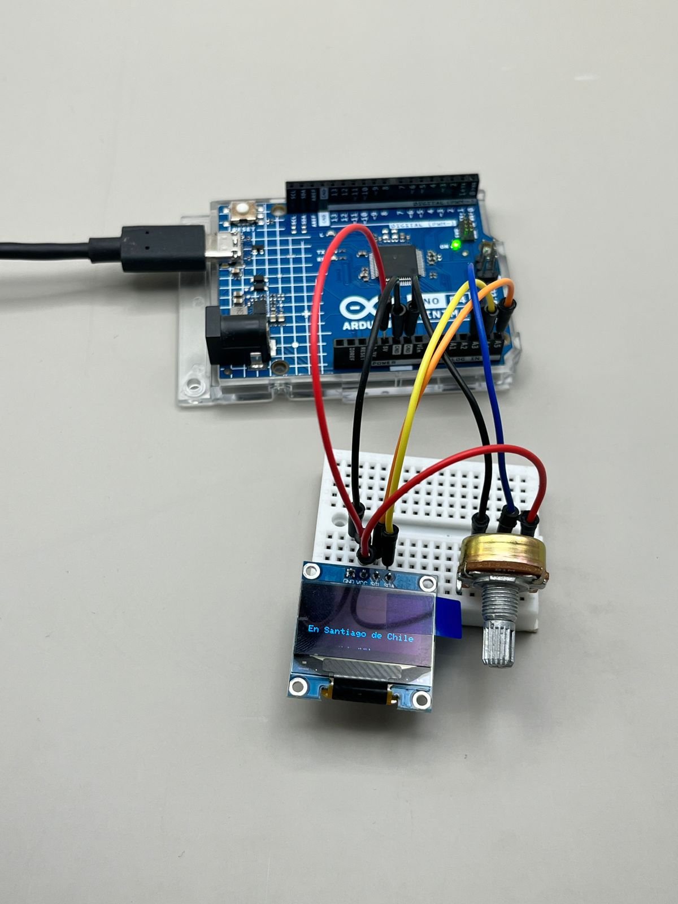
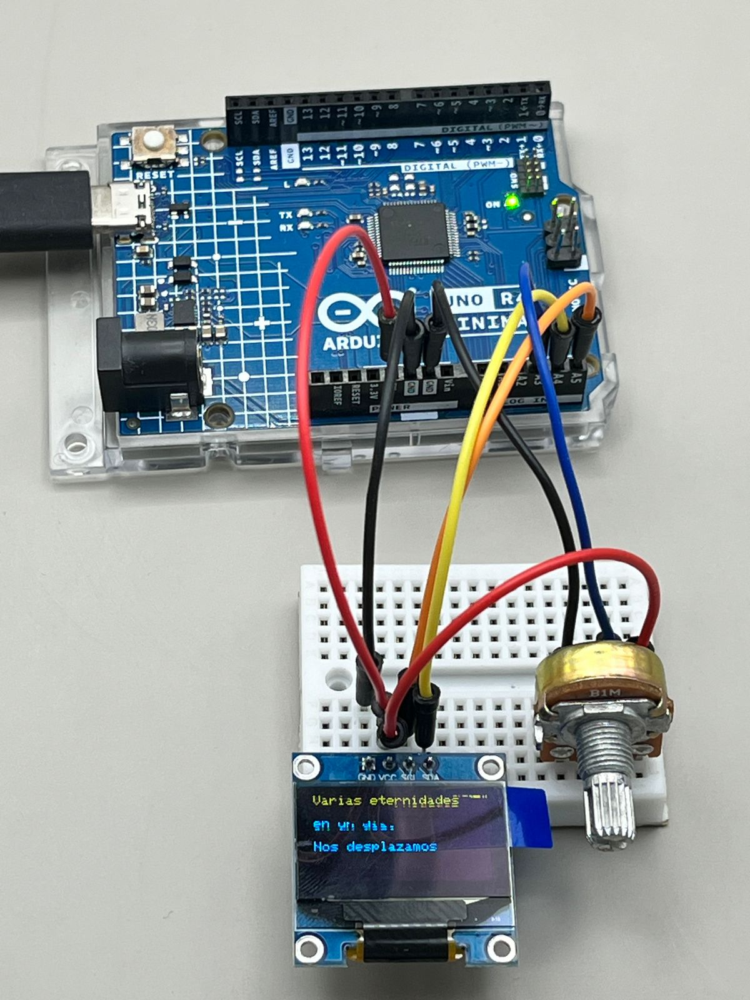
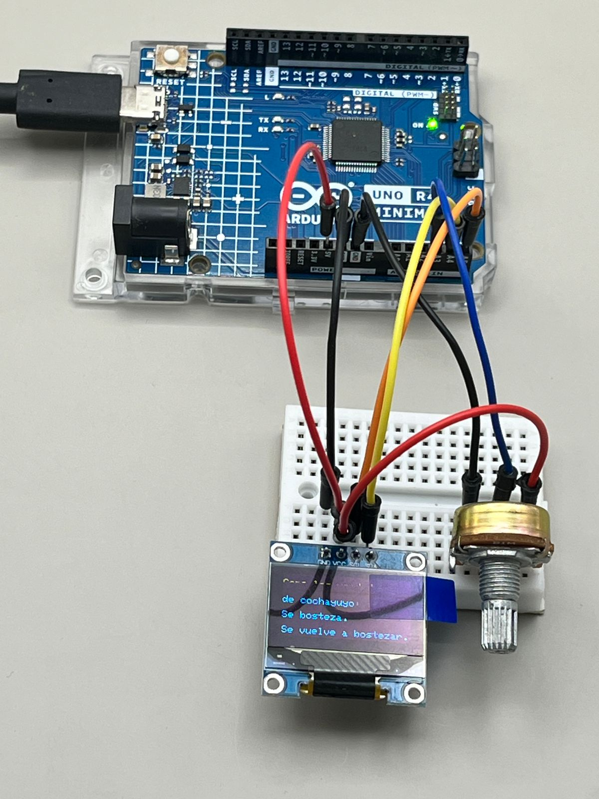
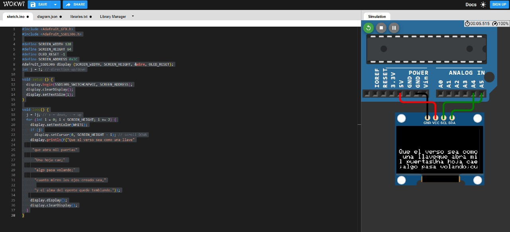

Poemario
Una pantalla OLED muestra un poema de manera dinámica, controlando su velocidad de desplazamiento vertical con una interfaz física simple e intuitiva: un potenciómetro.




Una pantalla OLED muestra un poema de manera dinámica, controlando su velocidad de desplazamiento vertical con una interfaz física simple e intuitiva: un potenciómetro.


